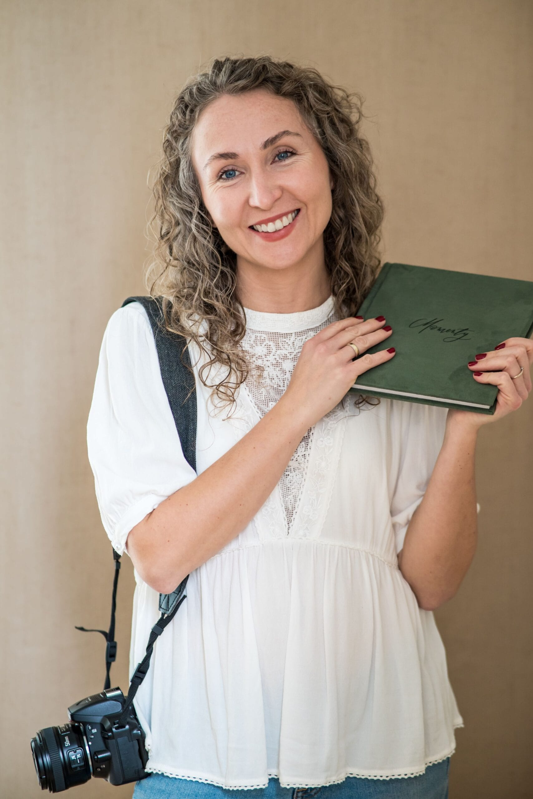
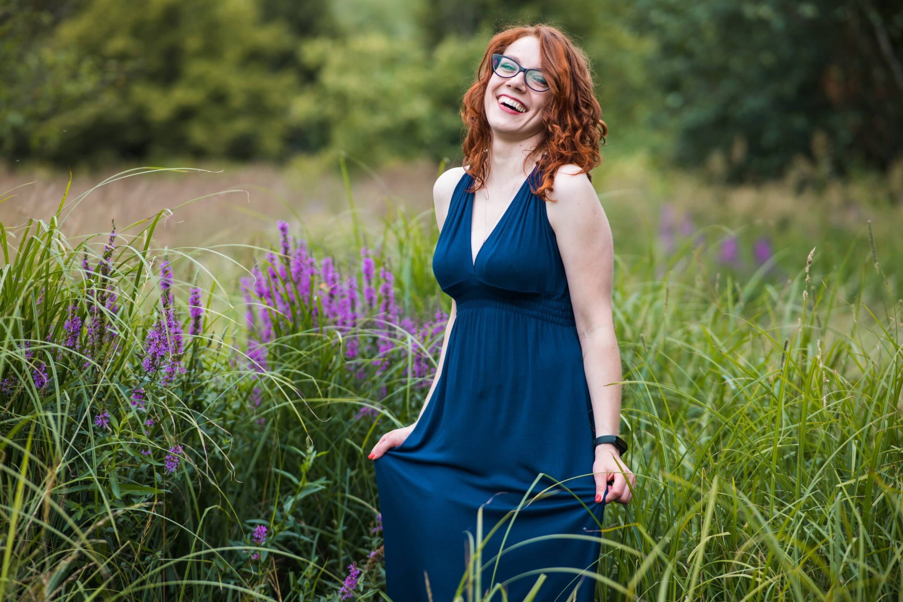

★★★★★
„Ania będzie wielokrotnie Was ustawiać, zwróci uwagę na każdy odstający kosmyk włosów, żeby było perfekt. Zrobi sto przysiadów i będzie biegać dookoła Was, aby wyszło jak najlepsze ujęcie. Ania zarazi Was uśmiechem!"

Naturalnie · z czułością · bez pozowania
Umów sesję
Jestem historykiem sztuki i pedagogiem — dzięki temu dbam o estetykę i kompozycję każdego kadru, a podczas sesji rodzinnych wiem, jak sprawić, by dla dzieci była to zabawa, nie przymus.
Prywatnie jestem szczęśliwą żoną i mamą dwóch córeczek, których pojawienie się sprawiło, że po 10 latach fotografii krajobrazowej zakochałam się w fotografii portretowej.
Dla mnie najważniejsza jest czułość — uchwycam Wasze emocje i to, co w Was wyjątkowe. Każdą sesję zaczynam od kawy i rozmowy, żeby poznać Wasze oczekiwania.
— Anna
Poznajmy się! Rozmawiamy o Waszych oczekiwaniach, miejscu i stylu sesji.
Pomogę w doborze strojów, miejsca i pory dnia — idealnej na Wasze zdjęcia.
Bez presji pozowania. Spacer, zabawa, swoboda — ja łapię momenty pomiędzy.
Starannie wyselekcjonowana i obrobiona galeria — zwykle w ciągu kilku dni.
Przyroda jako najlepsze tło — każda pora roku ma swój magiczny moment.
„W doskonałej fotografii chodzi o głębię uczucia,Peter Adams
nie o głębię ostrości."
„Ania będzie wielokrotnie Was ustawiać, zwróci uwagę na każdy odstający kosmyk włosów, żeby było perfekt. Zrobi sto przysiadów i będzie biegać dookoła Was, aby wyszło jak najlepsze ujęcie. Ania zarazi Was uśmiechem!"
„Wszystko przebiegało swobodnie, bez presji „pozowania”, były zabawy i wygłupy z córeczkami, a Ania uchwyciła to wszystko w piękne kadry!"
„Efekty sesji przerosły moje oczekiwania — różnorodne stylizacje, ciekawe kadry, niepowtarzalny klimat. Znajomi podkreślali, że Ani udało się uchwycić MNIE — dokładnie taką, jaka jestem."
„Nie czułam się skrępowana ani przez chwilę. Ania potrafiła delikatnie naprowadzić na dobre miejsce, pozę, gest — miło, nienachalnie. Zdjęcia otrzymałyśmy za kilka dni."
„Korzystaliśmy z jej usług przy okazji wizerunkowej sesji biznesowej i jesteśmy zadowoleni w 100%. Nie lubię pozować, a u Ani czułem luz i swobodę."
„Zdjęcia wywołane na ładnym matowym papierze ślicznie prezentują się na naszej ścianie zdjęć. Warto uchwycać takie momenty. I warto to robić z Anią ❤️"